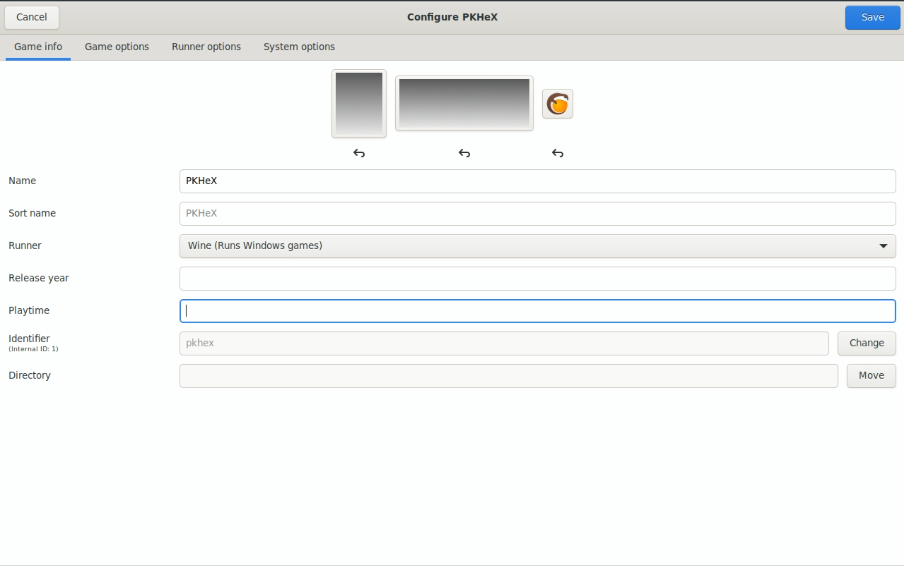
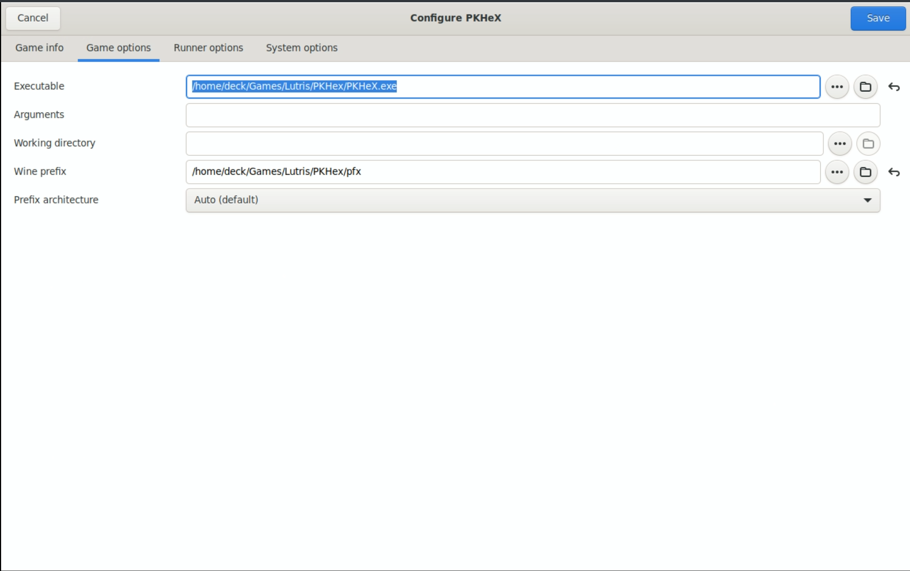
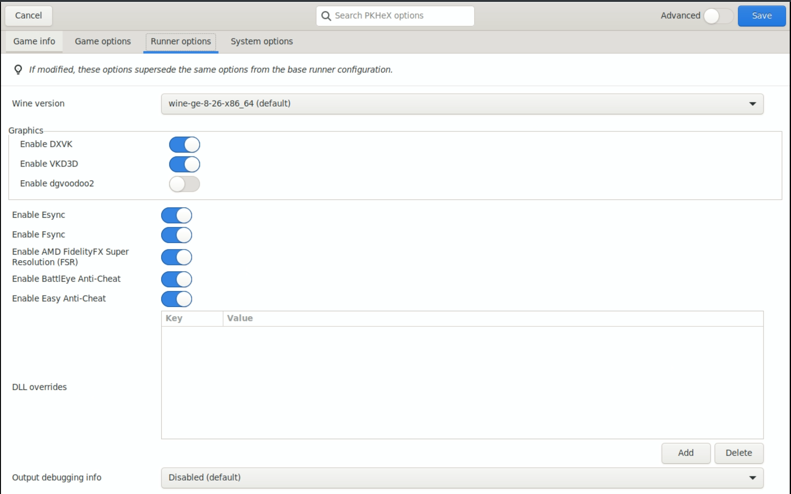

Tools and Guides, learn the tricks of the emulation trade!
Tools and Guides Table of Contents
- Tools and Guides, learn the tricks of the emulation trade!
- Tools and Guides Table of Contents
- Tools
- Guides
- How to Contribute to This Page
Tools
How to Set Up SyncThing
SyncThing is a free self hosted "cloud" solution. There are limitations, the biggest here with the steam deck and the way EmuDeck moves/renames folders and the use of symlinks which is a “virtual file or folder” that can point to another. This is VERY nice, but due to the nature of differing filesystems, there is a reason SyncThing does not support this, and this tutorial avoids symlinks. Emudeck does make a few changes where syncing is not as straightforward as it could be, simply because the devs changed the default folder via the emulator. PCSX2 savestates and memcard folders are not only named differently from default but also moved from their default directory.
On the PC/Mac end, you will want to setup SynctThing to the corresponding location which will differ for each user. Just use your head, and would be wise to copy the same Ignore Patterns
Ryujinx and Yuzu, I find it easiest to share the entire NAND (Yuzu) / User (Ryujinx) so that the user ID is the same on your OTHER device, and if the save is locked to an ID, you still have access to it. This does mean, before setting up Syncthing, BACKUP BACKUP BACKUP! Choose your Syncthing File Versioning as desired. Some systems/games may save often (IE Nintendo Switch) causing more overhead or even problems with a file versioning choice.
Steam Deck Syncthing paths and Ignore Patterns:
MAME SaveData:
path="/home/deck/.mame"
Ignore Patterns
// DO NOT IGNORE
!/nvram
!/sta
// IGNORE
*
.DS_Store
Flycast SaveData:
path="/run/media/mmcblk0p1/Emulation/saves/flycast/saves"
DuckStation MemCards:
path="/run/media/mmcblk0p1/Emulation/saves/duckstation/saves"
RetroArch SaveData:
path="/home/deck/.var/app/org.libretro.RetroArch/config/retroarch"
Ignore Patterns
// DO NOT IGNORE
!/states
!/saves
// IGNORE
*
.DS_Store
Ryujinx SaveData:
path="/home/deck/.config/Ryujinx/bis/"
RPCS3 SaveData:
path="/run/media/mmcblk0p1/Emulation/saves/rpcs3/saves"
Dolphin SaveData:
path="/home/deck/.var/app/org.DolphinEmu.dolphin-emu/data/dolphin-emu
Ignore Patterns
// DO NOT IGNORE
!/GC
!/Wii
!/GBA
!/states
!/StateSaves
// IGNORE
*
.DS_Store
PrimeHack SaveData:
path="/home/deck/.var/app/io.github.shiiion.primehack/data/dolphin-emu"
Ignore Patterns
// DO NOT IGNORE
!/GC
!/Wii
!/GBA
!/states
!/StateSaves
// IGNORE
*
.DS_Store
PPSSPP SaveData
path="/home/deck/.var/app/org.ppsspp.PPSSPP/config/ppsspp/PSP"
Ignore Patterns
// DO NOT IGNORE
!/PPSSPP_STATE
!/SAVEDATA
// IGNORE
*
.DS_Store
Citra SaveData:
path="/home/deck/.var/app/org.citra_emu.citra/data/citra-emu"
Ignore Patterns:
// DO NOT IGNORE
!/cheats
!/nand
!/sdmc
!/sysdata
// IGNORE
*
.DS_Store
PCSX2 SaveStates:
path="/run/media/mmcblk0p1/Emulation/saves/pcsx2/states"
PCSX2 MemCards:
path="/run/media/mmcblk0p1/Emulation/saves/pcsx2/saves"
Yuzu NAND:
path="/run/media/mmcblk0p1/Emulation/storage/yuzu/nand/"

Permissions:
Syncthing will need access to any folder in ~/.var
Install then open FlatSeal (A Permissions Editor with nice GUI, can be downloaded/installed via Discover in desktop mode)
Open Flatseal and click on Synching GTK>Filesystem>Other Files
~/.var/app/io.github.shiion.primehack/data/dolphin-emu
~/.var/app/org.citra_emu.citra/data/citra-emu
~/.var/app/org.DolphinEmu.dolphin-emu/data/dolphin-emu
~/.var/app/org.libretro.RetroArch/config/retroarch
~/.var/app/org.ppsspp.PPSSPP/config/ppsspp/PSP
Flatseal example via Steam Deck:

Start Syncthing Automatically:
Quit the Syncthing Daemon
Open Konsole and type
nano ~/.config/systemd/user/syncthing.service
Input this text:
[Unit]
Description=Syncthing
[Service]
Type=simple
ExecStart=flatpak run --command=syncthing me.kozec.syncthingtk
Restart=on-failure
RestartSec=1
SuccessExitStatus=3 4
[Install]
WantedBy=default.target
Save by typing the key command: Control O and pressing enter to confirm.
Continue in Konsole and type:
systemctl --user enable syncthing
systemctl --user start syncthing
If you wish to disable Syncthing starting @ launch:
systemctl --user stop syncthing
systemctl --user disable syncthing
If you use Decky, change the syncthing GUI port so it does not conflict to port 8384

or run this command via Konsole:
systemctl --user stop syncthing
sed -i 's/<address>127\.0\.0\.1:8080<\/address>/<address>127.0.0.1:8384<\/address>/' ~/.var/app/me.kozec.syncthingtk/config/syncthing/config.xml
systemctl --user start syncthing
Anyway, now with this, you have a roadmap to sync anything else that you desire! As to other non-console saves, remember some are not compatible between systems: lookup linux Tomb Raider vs Windows Tomb Raider. Now smack the devs heads for that one. Now if I can figure out a way to share prefixes between non-steam games so that I can sync C:Users/user/Appdata etc etc..... then all my non-steam games do not need individual Syncthing setup outside of a very convoluted Ignore Files list.
Guides
How to Set Up PKHeX
This section will cover how to download and set up PKHeX. For the GitHub repo, see https://github.com/kwsch/PKHeX.
Quote
PKHeX is a "Pokémon core series save editor, programmed in C#."
Set up Folders
- In Desktop Mode, open Konsole
- Enter:
mkdir -p $HOME/Games/Lutris/PKHeX/pfx- This command will create a couple of empty folders to make managing and installing PKHeX easier
- Open the PKHeX download page: https://projectpokemon.org/home/files/file/1-pkhex/, click
See changelog, click23.10.11, click theDownloadbutton to the right ofWith version 23.10.11:, download PKHeX to$HOME/Games/Lutris/PKHeX- Newer versions of PKHEX require dotnet 8 which is too new for these installation instructions
- If you are on a Steam Deck, this path may be
/home/deck/Games/Lutris/PKHeX
- Right click
PKHeX (23.10.11).zip, clickExtract,Extract Archive Here
Set up Lutris
- In Desktop Mode, open Discover and download
Lutris - Open Lutris
- Click the
Winebutton on the left, click the little page icon to the right, downloadwine-ge-8-26 - Click the
+button in the top left of the Lutris application - Click
Add locally installed game - On the
Game Infotab:- Name: PKHeX
- Sort Name: Leave Blank
- Runner: Wine (Runs Windows games)
- Release Year: Leave Blank
- 
- On the
Game Optionstab:- Executable: Click the
Browsebutton and navigate to thePKHeX.exefile in$HOME/Games/Lutris/PKHeX- If you are on a Steam Deck, this path may be
/home/deck/Games/Lutris/PKHeX
- If you are on a Steam Deck, this path may be
- Arguments: Leave Blank
- Working Directory: Leave Blank
- Wine Prefix: Click the
Browsebutton and select the$HOME/Games/Lutris/PKHeX/pfxfolder- If you are on a Steam Deck, this path may be
/home/deck/Games/Lutris/PKHeX/pfx
- If you are on a Steam Deck, this path may be
- 
- Executable: Click the
- On the
Runner optionstab:- Wine version:
wine-ge-8.26-x86_64 - Leave everything else at defaults
- 
- Wine version:
- Click the
Savebutton in the top right - Single click the
PKHeXtile in Lutris, click theWineicon at the bottom of the Lutris application, clickWinetricks - Click
Select the default wineprefix - Click
Install a Windows DLL or component - Locate
dotnet7in the list and check the box to the left ofdotnet7 MS.NET Runtime 7.0 LTS - Locate
dotnetdesktop7in the list and check the box to the left ofdotnetdesktop7 - Click
OK, wait a few moments for it to install - Close out of winetricks
- To open PKHeX, open Lutris, select the PKHeX tile, and click
Play
If PKHeX initially opens in a tiny window, click the Stop button in Lutris to force close it. Re-open PKHeX and the window should return to normal.
If you would like to add PKHeX to Game Mode, you may right click the PKHeX tile in Lutris and click Create steam shortcut.
How to Access Saves
Emulator configurations and saves when installed on Linux are typically stored in hidden folders (such as RetroArch). To access these saves requires a little bit of extra work.
Here's How
Flatseal
- In Desktop Mode, open Discover and download Flatseal
- Open Flatseal and click Lutris on the left hand side of the screen
- Scroll down to Filesystem
- Under
Other files, click the "Add folder" (Folder with a plus icon) button and enter/run/media - Under
Other files, click the "Add folder" (Folder with a plus icon) button and enter~/.var/app - Close out of Flatseal and proceed to the next section
Lutris
- Open Lutris
- Single click the
PKHeXtile in Lutris, click theWineicon at the bottom of the Lutris application, clickWine configuration - Click the
Drivestab, checkShow dot files, clickApply,OK - Open PKHeX and navigate to your saves
- See the Save Management page for specific save locations
How to Set Up mymc
This section will cover how to download and set up mymc. For the website, see http://www.csclub.uwaterloo.ca:11068/mymc/.
Quote
mymc is a public domain utility for working with PlayStation 2 memory card images (.ps2) as used by the PlayStation 2 emulator PCSX2. It allows save files in the MAX Drive (.max), EMS (.psu), SharkPort (.sps), X-Port (.xps) and Code Breaker (.cbs) formats to be imported directly into these images. It can also export save files in either the MAX Drive and EMS formats.
Set up Folders
- In Desktop Mode, open Konsole
- Enter:
mkdir -p $HOME/Games/Lutris/mymc/pfx- This command will create a couple of empty folders to make managing and installing mymc easier
- Download the latest version of mymc from the bottom of the page at http://www.csclub.uwaterloo.ca:11068/mymc/ to
$HOME/Games/Lutris/mymc - Right click
mymc-alpha-#.#.zip, clickExtract,Extract Archive Here- The
#.#refer to the version numbers which may vary depending on when you downloaded mymc
- The
Set up Lutris
- In Desktop Mode, open Discover and download Lutris
- Open Lutris
- Click the
Winebutton on the left, click the little page icon to the right, downloadLutris-7-2.2 - Click the
+button in the top left of the Lutris application - Click
Add locally installed game - On the
Game Infotab:- Name: mymc
- Sort Name: Leave Blank
- Runner: Wine (Runs Windows games)
- Release Year: Leave Blank
- On the
Game Optionstab:- Executable: Click the
Browsebutton and navigate to themymc-gui.exefile in$HOME/Games/Lutris/mymc- If you are on a Steam Deck, this path may be
/home/deck/Games/Lutris/mymc
- If you are on a Steam Deck, this path may be
- Arguments: Leave Blank
- Working Directory: Leave Blank
- Wine Prefix: Click the
Browsebutton and select the$HOME/Games/Lutris/mymc/pfxfolder- If you are on a Steam Deck, this path may be
/home/deck/Games/Lutris/mymc/pfx
- If you are on a Steam Deck, this path may be
- Executable: Click the
- On the
Runner optionstab:- Wine version:
Lutris-7-2.2-x86_64 - Leave everything else at defaults
- Wine version:
- Click the
Savebutton in the top right - To open mymc, open Lutris, select the mymc tile, and click
Play
If you would like to add mymc to Game Mode, you may right click the mymc tile in Lutris and click Create steam shortcut.
How to Access Saves
If your saves are on an external drive or SD Card, you will need to apply a few settings for Lutris to see these removable storage devices properly.
Here's How
Flatseal
- In Desktop Mode, open Discover and download Flatseal
- Open Flatseal and click Lutris on the left hand side of the screen
- Scroll down to Filesystem
- Under
Other files, click the "Add folder" (Folder with a plus icon) button and enter~/run/media - Close out of Flatseal and re-open mymc through Lutris
- Your removable storage devices will now be accessible through Lutris
How to Set Up XboxEepromEditor
This section will cover how to download and set up XboxEepromEditor. For the GitHub, see https://github.com/Ernegien/XboxEepromEditor.
Quote
XboxEepromEditor "allows for generating and/or editing the contents of an Original Xbox EEPROM".
Set up Folders
- In Desktop Mode, open Konsole
- Enter:
mkdir -p $HOME/Games/Lutris/XboxEepromEditor/pfx- This command will create a couple of empty folders to make managing and installing XboxEepromEditor easier
- Download the latest version of XboxEepromEditor, https://github.com/Ernegien/XboxEepromEditor/releases to
$HOME/Games/Lutris/XboxEepromEditor- Download the
XboxEepromEditor.#.#.#.#.zipfile- The
#.#.#.#refer to the version numbers. These may vary depending on when you download the latest release
- The
- Download the
- Right click
XboxEepromEditor.#.#.#.#.zip, clickExtract,Extract Archive Here- The
#.#.#.#refer to the version numbers which may vary depending on when you downloaded XboxEepromEditor
- The
Set up Lutris
- In Desktop Mode, open Discover and download Lutris
- Open Lutris
- Click the
Winebutton on the left, click the little page icon to the right, downloadLutris-7-2.2 - Click the
+button in the top left of the Lutris application - Click
Add locally installed game - On the
Game Infotab:- Name: XboxEepromEditor
- Sort Name: Leave Blank
- Runner: Wine (Runs Windows games)
- Release Year: Leave Blank
- On the
Game Optionstab:- Executable: Click the
Browsebutton and navigate to theXboxEepromEditor.exefile in$HOME/Games/Lutris/XboxEepromEditor- If you are on a Steam Deck, this path may be
/home/deck/Games/Lutris/XboxEepromEditor
- If you are on a Steam Deck, this path may be
- Arguments: Leave Blank
- Working Directory: Leave Blank
- Wine Prefix: Click the
Browsebutton and select the$HOME/Games/Lutris/XboxEepromEditor/pfxfolder- If you are on a Steam Deck, this path may be
/home/deck/Games/Lutris/XboxEepromEditor/pfx
- If you are on a Steam Deck, this path may be
- Executable: Click the
- On the
Runner optionstab:- Wine version:
Lutris-7-2.2-x86_64 - Leave everything else at defaults
- Wine version:
- Click the
Savebutton in the top right - To open XboxEepromEditor, open Lutris, select the XboxEepromEditor tile, and click
Play
If you would like to add XboxEepromEditor to Game Mode, you may right click the XboxEepromEditor tile in Lutris and click Create steam shortcut.
How to Access Saves
If your saves are on an external drive or SD Card, you will need to apply a few settings for Lutris to see these removable storage devices properly.
Here's How
Flatseal
- In Desktop Mode, open Discover and download Flatseal
- Open Flatseal and click Lutris on the left hand side of the screen
- Scroll down to Filesystem
- Under
Other files, click the "Add folder" (Folder with a plus icon) button and enter~/run/media - Under
Other files, click the "Add folder" (Folder with a plus icon) button and enter~/.var/app - Close out of Flatseal and re-open XboxEepromEditor through Lutris
- Your removable storage devices will now be accessible through Lutris
How to Set Up Aemulus Package Manager
This section will cover how to download and set up Aemulus Package Manager. For the GitHub, see https://github.com/TekkaGB/AemulusModManager/releases
Quote
Aemulus Package Manager is a program that downloads, organizes, merges, and builds mod loadouts for many of the Persona games.
This section uses modified instructions originally sourced from https://github.com/TekkaGB/AemulusModManager/issues/97
This section is specifically for Aemulus Package Manager. For detailed instructions on how to mod Persona 3 FES, see How to Mod Persona 3 FES.
Set up Folders
- In Desktop Mode, open Konsole
- Enter:
mkdir -p $HOME/Games/Lutris/AemulusPackageManager/pfx- This command will create a couple of empty folders to make managing and installing Aemulus Package Manager easier
- Download the latest version of Aemulus Package Manager, https://github.com/TekkaGB/AemulusModManager/releases to
$HOME/Games/Lutris/AemulusPackageManager- Download the
AemulusPackageManagerv#.#.#.7zfile- The
#.#.#refer to the version numbers. These may vary depending on when you download the latest release
- The
- Download the
- Right click
AemulusPackageManagerv#.#.#.7z, clickExtract,Extract Archive Here- The
#.#.#refer to the version numbers which may vary depending on when you downloaded Aemulus Package Manager
- The
Set up Lutris
- In Desktop Mode, open Discover and download Lutris
- Open Lutris
- Click the
Winebutton on the left, click the little page icon to the right, downloadwine-ge-8-26 - Click the
+button in the top left of the Lutris application - Click
Add locally installed game - On the
Game Infotab:- Name: Aemulus Package Manager
- Sort Name: Leave Blank
- Runner: Wine (Runs Windows games)
- Release Year: Leave Blank
- On the
Game Optionstab:- Executable: Click the
Browsebutton and navigate to theAemulusPackageManager.exefile in$HOME/Games/Lutris/AemulusPackageManager- If you are on a Steam Deck, this path may be
/home/deck/Games/Lutris/AemulusPackageManager
- If you are on a Steam Deck, this path may be
- Arguments: Leave Blank
- Working Directory: Leave Blank
- Wine Prefix: Click the
Browsebutton and select the$HOME/Games/Lutris/AemulusPackageManager/pfxfolder- If you are on a Steam Deck, this path may be
/home/deck/Games/Lutris/AemulusPackageManager/pfx
- If you are on a Steam Deck, this path may be
- Executable: Click the
- On the
Runner optionstab:- Wine version:
wine-ge-8.26-x86_64 - Leave everything else at defaults
- Wine version:
- Click the
Savebutton in the top right - Single click the
Aemulus Package Managertile in Lutris, click theWineicon at the bottom of the Lutris application, clickWinetricks - Click
Select the default wineprefix - Click
Install a Windows DLL or component - Locate
dotnetdesktop7in the list and check the box to the left ofdotnetdesktop7 - If you are modding Persona 4, locate
dotnetcoredesktop3in the list and check the box to the left ofdotnetcoredesktop3 - If you are modding Persona 5, locate
vcrun2010in the list and check the box to the left ofvcrun2010 - Click
OK, wait a few moments for it to install- Do note that this step may take several minutes
- Close out of winetricks
- To open Aemulus Package Manager, open Lutris, select the Aemulus Package Manager tile, and click
Play
If you would like to add Aemulus Package Manager to Game Mode, you may right click the Aemulus Package Manager tile in Lutris and click Create steam shortcut.
Info
When selecting paths, you may see a black box. To fix this, you may either close out and re-open the application or highlight the text to make it readable. The browse button may also be hidden at first glance, but if you hover your mouse over it, you can click it and select your preferred paths. If you prefer, you may also edit the config file, AemulusPackageManager.exe.config in $HOME/Games/Lutris/AemulusPackageManager.
How to Install the Universal Pokemon Randomizer
This section will cover how to download and set up the Universal Pokemon Randomizer. For the GitHub, see https://github.com/Ajarmar/universal-pokemon-randomizer-zx
Quote
Universal Pokemon Randomizer ZX by Ajarmar
With significant contributions from darkeye, cleartonic
Based on the Universal Pokemon Randomizer by Dabomstew
Note: The following folder locations are recommendations. You may choose a different folder location.
- Install Java, for instructions see How To Install Java on the Steam Deck
- In
/home/deck/Games, create aUniversalPokemonRandomizerfolder - Download the latest version of Universal Pokemon Randomizer, https://github.com/Ajarmar/universal-pokemon-randomizer-zx/releases, to
/home/deck/Games/UniversalPokemonRandomizer- Download
PokeRandoZX-v$_#_#.zip- The
#.#.#refer to the version numbers which may vary depending on when you downloaded the Universal Pokemon Randomizer
- The
- Download
- Right click
PokeRandoZX-v#_#_#.zip, clickExtract > Extract archive here- The
#.#.#refer to the version numbers which may vary depending on when you downloaded the Universal Pokemon Randomizer
- The
- Right click
launcher_UNIX.sh, clickProperties, clickPermissions, and ensureIs executableis checked - Right click
launcher_UNIX.sh, clickOpen with Kateor a text editor of your choice -
At the top of the file, below
#!/bin/bash, write the following two lines:export JAVA_HOME=$HOME/Applications/jdk export PATH=$JAVA_HOME/bin:$PATH -
Save and exit out of the file
- To launch the Universal Pokemon Randomizer, double click
launcher_UNIX.sh
How to Apply the Universal Slowdown Removal Patch for Final Fantasy Tactics: The War of the Lions
This section will cover how to download and set up a patcher for Final Fantasy Tactics: The War of the Lions. For the source, see https://ffhacktics.com/smf/index.php?topic=9523.0
Set up Folders
- In Desktop Mode, open Konsole
- Enter:
mkdir -p $HOME/Games/Lutris/FFTWOTLPatch/pfx- This command will create a couple of empty folders to make managing and installing the patcher easier
- Download the patcher, https://ffhacktics.com/smf/index.php?topic=9523.0 to
$HOME/Games/Lutris/FFTWOTLPatch - Right click
FFT - WotL Universal Slowndown removal patch - By Plastik.rar, clickExtract,Extract Archive Here- If the
.rarcreates a subfolder, move the contents out directly into$HOME/Games/Lutris/FFTWOTLPatch
- If the
Set up Lutris
- In Desktop Mode, open Discover and download Lutris
- Open Lutris
- Click the
Winebutton on the left, click the little page icon to the right, downloadwine-ge-8-26 - Click the
+button in the top left of the Lutris application - Click
Add locally installed game - On the
Game Infotab:- Name: FFTWOTLPatch
- Sort Name: Leave Blank
- Runner: Wine (Runs Windows games)
- Release Year: Leave Blank
- On the
Game Optionstab:- Executable: Click the
Browsebutton and navigate to theFFT WotL - Universal Slowdown patch.exefile in$HOME/Games/Lutris/FFTWOTLPatch- If you are on a Steam Deck, this path may be
/home/deck/Games/Lutris/FFTWOTLPatch
- If you are on a Steam Deck, this path may be
- Arguments: Leave Blank
- Working Directory: Leave Blank
- Wine Prefix: Click the
Browsebutton and select the$HOME/Games/Lutris/FFTWOTLPatch/pfxfolder- If you are on a Steam Deck, this path may be
/home/deck/Games/Lutris/FFTWOTLPatch/pfx
- If you are on a Steam Deck, this path may be
- Executable: Click the
- On the
Runner optionstab:- Wine version:
wine-ge-8.26-x86_64 - Leave everything else at defaults
- Wine version:
- Click the
Savebutton in the top right - To open the patcher, open Lutris, select the FFTWOTLPatch tile, and click
Play - Apply the patch to your ROM
If your ROM is on an SD Card or external storage device
- In Desktop Mode, open Discover and download Flatseal
- Open Flatseal and click Lutris on the left hand side of the screen
- Scroll down to Filesystem
- Under
Other files, click the "Add folder" (Folder with a plus icon) button and enter~/run/media - Close out of Flatseal and re-open FFTWOTLPatch through Lutris
- Your removable storage devices will now be accessible through Lutris
How to Use ROM Hacks
ROM Hack Sources
This list is not exhaustive
- GameBanana: https://gamebanana.com/
- GBAtemp: https://gbatemp.net/
- Metroid Construction: https://metroidconstruction.com/hacks.php
- PokeCommunity: https://www.pokecommunity.com/
- ROMHacking: https://www.romhacking.net/
- SegaXtreme: https://segaxtreme.net/resources/categories/translations.9/
- SMW Central: https://www.smwcentral.net/?p=main
IMPORTANT
- Everything can be done on the Steam Deck itself
- If you plan on using Steam ROM Manager to add this ROM Hack to Steam, it may not have art yet on https://www.steamgriddb.com/. If it does not have art, create a page here: https://www.steamgriddb.com/ and locate some custom art for the ROM Hack so others can use it in the future as well.
- Not all ROM Hacks can be applied using the following method. For ROM Hacks that do not use the below method and do not have a Linux equivalent program to apply patches, you can either use Wine/Proton (through Lutris or Steam), or you can use a Windows computer to apply these patches and transfer over the patched ROM Hack.
Tutorial
- Locate a ROM Hack you would like to use and its associated game ROM
- Example:
- File 1: A clean ROM of Pokemon Emerald for the Nintendo Gameboy Advance
- File 2: A ROM Hack that turns Pokemon Emerald into a roguelike: https://www.pokecommunity.com/showthread.php?t=479406
- Your ROM Hack patch file may end with one of the following file extensions:
IPS,UPS,APS,BPS,RUP,PPF,MOD,XDELTA,VCDIFF
- Example:
- (Optional) Some ROM Hacks expect a specific hash, use https://www.romhacking.net/hash/, to check the hash of your ROM
- You can also check hashes in the Dolphin file manager on the Steam Deck by doing the following:
- Right click the ROM
- Click Properties
- Click the Checksums tab
- Click
Calculateto the right of the checksum algorithm (typically MD5 or SHA-256)
- You can also check hashes in the Dolphin file manager on the Steam Deck by doing the following:
- Depending on your ROM Hack patch file, open:
- https://www.romhacking.net/patch/
- Supported ROM Hack file types:
IPS,UPS,APS,BPS,RUP,PPF,MOD,XDELTA(XDelta2 specifically),VCDIFF
- Supported ROM Hack file types:
- https://kotcrab.github.io/xdelta-wasm/
XDELTA(XDelta3 specifically)
- https://www.romhacking.net/patch/
- For the top field,
ROM FileorSource file, browse to your clean ROM - For the bottom field,
Patch File, browse to your patch - Click
Apply Patch - Save this newly patched ROM, rename it to match the ROM Hack, and place it in the respective system folder within
Emulation/roms - Treat the patched ROM file as its own distinct game from the original ROM file, you may use either Steam ROM Manager or EmulationStation-DE to play your newly patched ROM
How to Contribute to This Page
You will need to create a GitHub account first. To sign up for GitHub, see https://github.com/signup.
- Open https://github.com/EmuDeck/emudeck.github.io/blob/main/docs/community-creations/steamos/tools-and-guides.md
- Click the
Pencilicon in the top right - Create a new section header below the most recently added section under the respective category using three
###and the name of the section after the three###- For example,
### My Great Guide to Unlocking the Secrets of the Steam Deck! - Your section will automatically be added to the Table of Contents
- For example,
- Write your section under your newly created header
- Once you are finished making your changes, click the
Commit changes...button in the top right - You will be prompted to create a Pull Request. Add a little bit of detail about what you added and why

- You will not see the option to
Commit directly to the main branchso do not worry about inadvertently making any changes
- Submit your Pull Request
- Once your Pull Request is reviewed, it will be merged and any of your changes will automatically be deployed to this page

{kind=link}
{kind=link}
{kind=link}
{kind=link}
{kind=link}
{kind=link}
{kind=link}